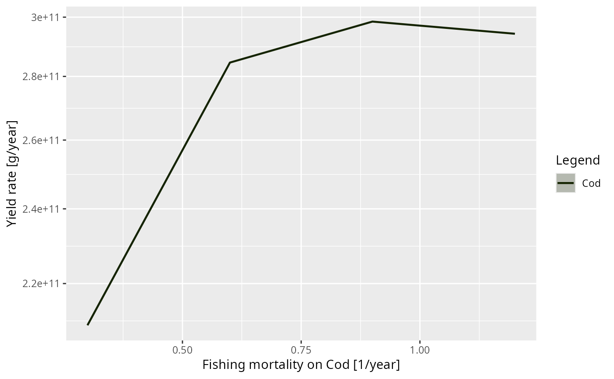

![[Experimental]](figures/lifecycle-experimental.svg) These functions build the
These functions build the set_func that scanModel() uses to apply each
scan value to the model. Each returns a function of (params, value) that
returns a modified MizerParams object, carrying attributes that let
scanModel() label the axis and mark reference lines without being told.
Usage
scanEffort(gear = NULL)
scanFishingMortality(species, gear = NULL)
scanSpeciesParam(species, parameter)Arguments
- gear
For
scanEffort(), the name of the gear whose effort is scanned, or NULL (default) to scan the effort of every gear together. ForscanFishingMortality(), the name of the gear whose fishing mortality on the target species is scanned. Only needed when several gears catch the species; if NULL, the fishing mortality from all of them is replaced.- species
The name of the target species.
- parameter
The name of the species parameter to scan.
Details
You are not restricted to these. Any function of (params, value) returning
a MizerParams will do, as long as it is idempotent: with
continuation = TRUE it is applied to the object it returned at the previous
scan value, so applying it twice must give the same thing as applying it
once. Setting a value is idempotent; appending something is not, which is why
scanFishingMortality() checks whether its gear is already there.
scanEffort()Scans the fishing effort. With
gear = NULLthe same effort is applied to every gear, which is what a bifurcation diagram over fishing effort needs.scanFishingMortality()Scans the fishing mortality on one species while leaving the fishing on every other species alone. It does this by adding a temporary gear that catches only the target species with catchability 1, so that its effort is the fishing mortality, and switching off the catchability of the gears it replaces. If several gears catch the species you can name the one whose mortality is to be varied, and the others go on fishing unchanged. The added gear is given a name the model is not already using, so a model that happens to have a gear called
"scan"is not disturbed.scanSpeciesParam()Scans any species parameter. It assigns to
species_params(), so the value is recorded as a given one and the change propagates through to the rates that depend on it. The parameter has to be one the model already has; add the column first if it is not.
See also
Other scan functions:
MizerScan(),
plot.MizerScan(),
plotYieldVsF(),
scanModel()
Examples
# \donttest{
# The fishing mortality on Cod alone, leaving the other species alone
plot(scanModel(NS_params, scan_values = seq(0, 1.2, 0.3),
set_func = scanFishingMortality("Cod"),
value_func = getYield, species = "Cod"))
#> ℹ No `a` column so using a = 0.01 in w = a l^b, with w in g and l in cm.
#> ℹ No `b` column so using the isometric default b = 3 in w = a l^b.

# }